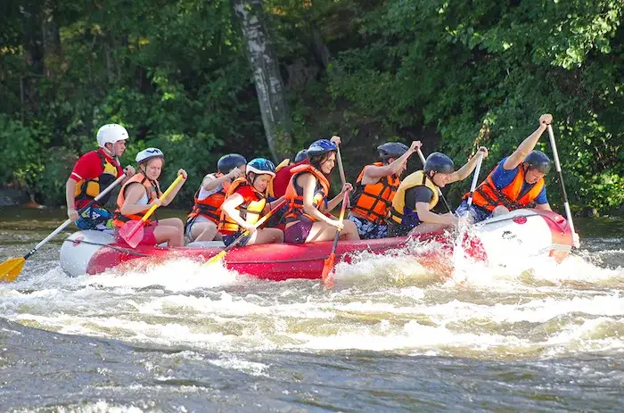

Contact UNICON White Water Rafting Company
Adventure Awaits You!


Our Employees at UNICON White Water Rafting Company
UNICON White Water Rafting Company was created from the dream of good thinkers driven by innivation and ethusiasm. With customer's satisfaction in mind, we have upscaled through decades of innovation and development to bring leisure, sport, pic-nic and more to you.
Haven spent several decades in the field of white water rafting innovation, we stand an edge of delivering the best in safty and quality.